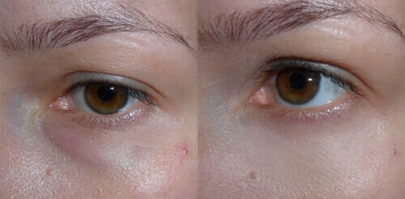

ELENA UNGAREANU: Cum să întinerești al 56 de ani fără operații
plastice și fără injecții cu botox la numai !
Vreau să vă povestesc povestea mea despre întinerire. Poate va fi utilă altor femei, care
visează
să arate frumoasă și atrăgătoare după 50 de ani. Metoda mea este bună prin aceea că este eficientă,
ieftină și
nu cere mult timp.
La început, scurt de tot, câte ceva despre mine
Mă numesc Elena, locuiesc într-un orășel mic, Slatina. Sunt profesoară. Căsătorită. Fiica
este
deja matură și ne-a bucurat cu o nepoțică minunată, Maria
Pe noi, pe mine și soțul meu, fiica ne-a bucurat cu minunata nepoțică Maria
De ce am decis să-mi întineresc fața? Este foarte simplu – pentru că am vrut să fiu frumoasă
și
să plac, ca și înainte, soțului meu. Este atât de natural pentru o femeie! ”Frumusețea va salva lumea” –
eu
cred în această expresie.
La cei 56 de ani eu arătam așa cum arată practic toate femeile de la noi la această vârstă.
Fața mea 4 luni în urmă. Puteți nici să nu comentați. Ochelarii au devenit un
accesoriu
obișnuit pentru a ascunde pungile de sub ochi
Cum am întinerit
Problema întineririi am abordato-o, așa cum face orice profesoară care se pregăteste pentru
o
temă necunoscute – am studiat-o pe îndelete.
Metode radicale de întinerire există numai trei, în principiu:
• Cosmetologia cu aparate – piling cu laser, ultrasunet, magneți ș.a.m.d. • Injecții cu
botox. • Chirurgie plastică.
Prima metodă nu mi se potrivea din cauza lipsei unui asemenea serviciu la
noi
în oraș, în Slatina. Iar până la centrul regional ( mai mult de 200 km – n-ai să faci 10-15 durumuri
pentru
fiecare ședință. Și este si destul de scump. Nu este pentru un salariu de profesoară.
De injecțiile cu botox mă temeam. Prietena mea și-a făcut într-un centru
cosmetologic din Munhen, iar cât de mult i s-a umflat apoi sub ochi – era ceva de groază. Trei săptămânui
nu a
putut ieși în lume. Iar eu mai sunt și alergică la o grămadă de premarate medicale – începând de la
inofensivul nafazolin și până la antibilotce. Așa că nu voiam să risc. Și iarăși, prețul!
Despre operații plastice chiar nu mă gândeam. Cu banii dați pentru o
asemenea
operație poți să cumperi tot orășelul nostru.
Am fost eu tristă puțin, dar dacă nu se poate – nu se poate.
Mi-a ajutat întâmplarea
Am văzut la televizor o emisiune despre o vedetă de la Hollywood de 65 de ani. Emisiunea era
filmată la ea acasă, în ajunul Crăciunului.
Ca de obicei, prezentatorul făcea complimente de rutină, despre cât de bine arată și,
deodată,
ea a răspuns altfel decât e obișnuit:
– Mulțumesc elvețienilor! La vârsta mea deja mi-e frică sa fac operații
plastice.
După cum povesteam, 7 ani în urmă mai nu a murit într-o clinică elvețiană de la chirurgia
plastică și a încetat pentru mult timp să mai facă experimente periculoase cu înfățișarea sa. Nu-și
injecta
botox, pentru că fața îi este ca de păpușă, nici un fel de mimică. Dar anul trecut Institutul elvețian de
frumusețe, ca o compensare, i-a propus o soluție mult mai bună – crema revoluționară .
Cu o
eficacitate mult mai mare decât botox-ul, dar absolut inofensivă și nici un fel de injecții! Iar ca
dovadă a
eficienței cremei a arătat pozele sale de acum 3 luni.
Apoi prezentatorul a început să o întrebe pe cântăreață despre copiii ei, despre nepoți ș.a.
Mie
nu-mi era interesant aceasta. Eu deja visam la !
Am început să caut în internet informații despre ea. Și am găsit! Apropo,
producătorul la indicația și în cadrul finanțării depline din partea Asociației cosmetologilor și-a
asumat să distribuie o partidă limitată de cremă la ! Promoția cu preț preferențial va fi accesibilă de la la (inclusiv). Așa că, fetelor, cine vrea să
întinerească cu ajutorul unui mijloc foarte tare și cu bani puțini – grăbiți-vă! După promoție prețul
va fi usturător! Pentru comandă accesați SITE-UL OFICIAL DE PE ACEST LINK
(sau apăsând pe butonul Obțineți la
Ceea ce am și făcut imediat! Am comandat pe loc! Prețul era întradevăr !
Și iată că peste 10 zile coletul multașteptat era la mine. După cum era scris în
instrucțiune, am început să folosesc de două ori pe zi.
Schimbările
le-am văzut
practic a doua săptămână! Mi s-a netezit laba gâștei de la ochi. Pliurile nasolabiale mi s-au redus
considerabil, la fel și ridurile de pe frunte, tenul pielii a devenit de culoare mai
deschisă,s-a îndreptat
conturul feței. Cât m-am bucurat! Și în fiecare zi remarcam schimbări îmbucurătoare pe
fața mea.
Aceasta era fantastic! Și am decis să întipăresc această fantastică,
fotografiind periodic fața mea. Iată ce a ieșit din aceasta.
Două săptămâni de folosit
Trei săptămâni cu
O lună cu și 15 ani de parcă nici nu au fost!
Iată, pentru convingere – eficacitatea
Au trecut 4 luni
De la schimbarea mea miraculoasă au trecut 4 luni. Ce s-a schimbat de atunci? Voi spune
una cert – eu am început să iubesc mai mult viața, și pe mine. Am început să râd mai mult și să mă
bucur de lucruri mărunte. Mi-am schimbat culoarea părului și coafura pe una mai tinerească. Soțul îmi
spune că am întinerit cu 15 ani la la față și cu 30 la suflet!
Cu o față întinerită poți să-ți amintești tinerețea și să-ți faci de cap.
Aceasta nu va arăta prostește.
Efectul de intinerire de la crema revoluționară nu
s-a
pierdut. În descriere producătorii promit păstrarea efectului pe un an – un an
și jumătate! Mai mult decât cu botox! Și numai la ! Știința nu stă pe loc.
– este un adevărat elixir al tinereții, pe care l-am descoperit pentru
sine!
Iată care este povestea mea. Voi fi bucuroasă dacă va ajuta cuiva să devină frumoasă și
dorită!
Fetelor, vă reamintesc, toți cei care doresc să întinerească, să-și
înlăture pungile de sub ochi și șă-și netezească ridurile și să mai și reușească la prețul de
promoție de -
grăbiți-vă
să plasați solicitarea pe site-ul producătorului (pentru trecere –
mai jos este butorul "OBȚINEȚI LA ")! Promoția cu preț preferențial va fi accesibilă numai de la
la (inclusiv)!
Comentarii
Ana Mironа
Dar cât durează efectul după un curs de utilizare a ?
Îmi placeRăspunde14
ELENA UNGAREANU
Ana, după un singur curs de utilizare a efectul se menține
aprozimativ un an. La o utilizare regulată acest timp crește și într-un sfârșit veți
înțelege că nu vă mai este necesar!
Ultima mea poză.
Îmi placeRăspunde62
Xenia
Susțin! O soluție foarte eficientă contra pungilor de sub ochi! Ridurile
fine dispar și destul de repede. Iar mie mi-a mai plăcut și prețul!!! – este chiar
pomană!
Îmi placeRăspunde44
ELENA UNGAREANU
Xenia, mulțumesc pentru foto! E un rezultat excelent! Fetelor, mai scrieți
despre rezultatele voastre! Este foarte interesant.
Îmi placeRăspunde14
Marika
am comandat aseară pe site-ul oficial la , sper că și mie
îmi va ajuta!
Îmi placeRăspunde37
Anastasia
O zi bună! AM 45 DE ANI ȘI, DESIGUR, AM RIDURI ÎN JURUL OCHILOR. Vreau să
încerc crema pe care îl recomandați, mi-a plăcut descrierea,
vreau să scap de riduri și să le redau ochilor frumusețea inițială.
Îmi placeRăspunde3
ELENA UNGAREANU
Să-l încercați neapărat! Și scrieți despre rezultare! Și toți cei care au
folosit – scrieți despre reușitele voastre. Ne vom ajuta unii pe
alții!
Îmi placeRăspunde11
Victoria
Una dintre prietenele mele îmi aducea din Israel, rezultatul este desigur
super! Mă laud – aceata este după o lună de folosire
Îmi placeRăspunde25
ELENA UNGAREANU
Victoria, excelent! Și eu am aflat întâmplător despre el. Asemenea lucruri
trebuie neapărat povestite tuturor!
Îmi placeRăspunde7
Kate
la este chiar o minune! Pungile de sub ochi și ridurile au
dispărut într-o lună!
Îmi placeRăspunde66
Stela
Impresionant!
Îmi placeRăspunde9
ELENA UNGAREANU
Ecaterina, un rezultat excelent!
Îmi placeRăspunde5
Ilona
Sunt redactorul unei reviste. În fiecare zi trebuie să citesc munți de
materiale. La sfârșitul zilei ochii, cum s-ar zice, urcă pe frunte. Devin roșii și
lăcrimează. Fiica mea mă întreabă mereu ”Mama, de ce plângi”. Și bineînțeles că mi-au
apărut
niște pungi imense! mi-a cumpărat soțul. Îl folosesc deja de o lună.
Parcă m-am născut din nou! Că deja mă gândeam să-mi caut alt loc de muncă.
Îmi placeRăspunde14
Dana
Eu aveam niște cearcăne îngrozitoare și riduri. la mi le-a
înlăturat
într-o lună! Încă din prima săptămână pungile au devenit mai deschise la culoare, apoi au
dispărut cu totul. Un rezultat uluitor, judecați și singuri:
Îmi placeRăspunde26
ELENA UNGAREANU
Dana, un efect foarte vizibil! Doar o lună? Excelent rezultat! Mulțumesc
pentru recenzie)))
Îmi placeRăspunde4
Dana
Elena, Dvs. mulțumesc pentru articol.
Îmi placeRăspunde2
Nikoletta
Elena scrie corect. Femeia trebuie să aibă fericire personală la orice
vârstă. Eu am deja 63, dar nu maă gândesc să cedez! Iată rezultatul meu.
Îmi placeRăspunde17
ELENA UNGAREANU
Olga, sunteți extraordinară! Sunt încântată de rezultatul Dvs!
Îmi placeRăspunde1
Văcuța Zizi
Sunt învățătoare. Am suprasolicitare nervoasă mai ceva ca la actori. Să
descifrezi zilnic cracaleții din zeci de caiete școlărești, să scrii conspectele
lecțiilor, să citești literatură de specialitate, Nu muteam să adorm îndelung. la
a
devenit salvarea mea! Îl folosesc deja de 3 săptămâni. Ajută foarte mult – ochii au
întinerit vizibil!
Îmi placeRăspunde13
Olesea
Dar spuneți-mi, dacă am pielea sensibilă pot folosi ?
Îmi placeRăspunde10
ELENA UNGAREANU
În instrucțiune scrie că este hipoalergen și a trecut
certificarea în țara noastră. Nu sunt contraindicații de utilizare.
Îmi placeRăspunde2
Olesea
Mulțumesc!
Îmi placeRăspunde1
Svetlana P.
O soluție foarte bună, după cum mă uit...probabil voi comanda. Este
atractiv prin faptul că este potrivit pentru toate tipurile de piele, eu am o piele
suprasensibilă, iar aceasta este foarte important. Voi incerca, mulțumesc!
Îmi placeRăspunde0
Ana Miron
Vă sunt foarte resunoscătoare pentru informația destre crema .
Demult căutam ceva asemănător. Aștept cu nerăbdare coletul! Mulțumesc!
Îmi placeRăspunde7
Tatiana
Nicicum nu mă pot obișnui cu noii mei ochi, Această soluție este o minune,
nu alta. Și e atât de economicoasă - . L-am folosit în decurs de 4 săptămâni, am uitat
ce
înseamnă pungi și cearcăne la ochi.

Îmi placeRăspunde18
ELENA UNGAREANU
Tatiana, mulțumesc de recenzie! E impresionant!
Îmi placeRăspunde9
Anna
Bună ziua! Vreau să vă spun că al meu este deja pe
drum! Sper să scap de riduri și de pungile de sub ochi)))
Îmi placeRăspunde4
Dana
Am cumpărat, mi-a plăcut! L-am folosit timp de 4 săptămâni, într-adevăr este
un elixir al tinereții, nu altceva!!! Rezultatul e mai jos
Îmi placeRăspunde17
Olga Păpușa
Recent am comandat pentru mama – este încântată!!! Are UN PUTERNIC EFECT DE
LIFTING!
Îmi placeRăspunde12
Recomandat de EXPERȚI
Atenție! Ultima zi a primirii
solicitărilor pentru promoțional – de la la
(inclusiv)!

Comentarii
Dar cât durează efectul după un curs de utilizare a ?
Ana, după un singur curs de utilizare a efectul se menține aprozimativ un an. La o utilizare regulată acest timp crește și într-un sfârșit veți înțelege că nu vă mai este necesar!
Ultima mea poză.
Susțin! O soluție foarte eficientă contra pungilor de sub ochi! Ridurile fine dispar și destul de repede. Iar mie mi-a mai plăcut și prețul!!! – este chiar pomană!
Xenia, mulțumesc pentru foto! E un rezultat excelent! Fetelor, mai scrieți despre rezultatele voastre! Este foarte interesant.
am comandat aseară pe site-ul oficial la , sper că și mie îmi va ajuta!
O zi bună! AM 45 DE ANI ȘI, DESIGUR, AM RIDURI ÎN JURUL OCHILOR. Vreau să încerc crema pe care îl recomandați, mi-a plăcut descrierea, vreau să scap de riduri și să le redau ochilor frumusețea inițială.
Să-l încercați neapărat! Și scrieți despre rezultare! Și toți cei care au folosit – scrieți despre reușitele voastre. Ne vom ajuta unii pe alții!
Una dintre prietenele mele îmi aducea din Israel, rezultatul este desigur super! Mă laud – aceata este după o lună de folosire
Victoria, excelent! Și eu am aflat întâmplător despre el. Asemenea lucruri trebuie neapărat povestite tuturor!
la este chiar o minune! Pungile de sub ochi și ridurile au dispărut într-o lună!
Impresionant!
Ecaterina, un rezultat excelent!
Sunt redactorul unei reviste. În fiecare zi trebuie să citesc munți de materiale. La sfârșitul zilei ochii, cum s-ar zice, urcă pe frunte. Devin roșii și lăcrimează. Fiica mea mă întreabă mereu ”Mama, de ce plângi”. Și bineînțeles că mi-au apărut niște pungi imense! mi-a cumpărat soțul. Îl folosesc deja de o lună. Parcă m-am născut din nou! Că deja mă gândeam să-mi caut alt loc de muncă.
Eu aveam niște cearcăne îngrozitoare și riduri. la mi le-a înlăturat într-o lună! Încă din prima săptămână pungile au devenit mai deschise la culoare, apoi au dispărut cu totul. Un rezultat uluitor, judecați și singuri:
Dana, un efect foarte vizibil! Doar o lună? Excelent rezultat! Mulțumesc pentru recenzie)))
Elena, Dvs. mulțumesc pentru articol.
Elena scrie corect. Femeia trebuie să aibă fericire personală la orice vârstă. Eu am deja 63, dar nu maă gândesc să cedez! Iată rezultatul meu.
Olga, sunteți extraordinară! Sunt încântată de rezultatul Dvs!
Sunt învățătoare. Am suprasolicitare nervoasă mai ceva ca la actori. Să descifrezi zilnic cracaleții din zeci de caiete școlărești, să scrii conspectele lecțiilor, să citești literatură de specialitate, Nu muteam să adorm îndelung. la a devenit salvarea mea! Îl folosesc deja de 3 săptămâni. Ajută foarte mult – ochii au întinerit vizibil!
Dar spuneți-mi, dacă am pielea sensibilă pot folosi ?
În instrucțiune scrie că este hipoalergen și a trecut certificarea în țara noastră. Nu sunt contraindicații de utilizare.
Mulțumesc!
O soluție foarte bună, după cum mă uit...probabil voi comanda. Este atractiv prin faptul că este potrivit pentru toate tipurile de piele, eu am o piele suprasensibilă, iar aceasta este foarte important. Voi incerca, mulțumesc!
Vă sunt foarte resunoscătoare pentru informația destre crema . Demult căutam ceva asemănător. Aștept cu nerăbdare coletul! Mulțumesc!
Nicicum nu mă pot obișnui cu noii mei ochi, Această soluție este o minune, nu alta. Și e atât de economicoasă - . L-am folosit în decurs de 4 săptămâni, am uitat ce înseamnă pungi și cearcăne la ochi.
Tatiana, mulțumesc de recenzie! E impresionant!
Bună ziua! Vreau să vă spun că al meu este deja pe drum! Sper să scap de riduri și de pungile de sub ochi)))
Am cumpărat, mi-a plăcut! L-am folosit timp de 4 săptămâni, într-adevăr este un elixir al tinereții, nu altceva!!! Rezultatul e mai jos
Recent am comandat pentru mama – este încântată!!! Are UN PUTERNIC EFECT DE LIFTING!